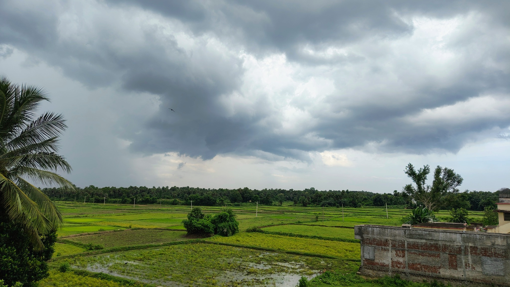
🌾
పొలాల ఫోటోలు, వ్యవసాయం మా ఊరి జీవనంలో ఉన్న స్థానం చూడండి.
Explore the fields and the role farming plays in village life.
పచ్చని పొలాలు, ఆత్మీయమైన ప్రజలు, మన సంప్రదాయాల సొగసు — మా ఊరికి స్వాగతం.
Green fields, warm hearts and living traditions. Welcome to our village.
మా ఊరిని తెలుసుకోండి ↓Discover our village ↓గొర్లెపాడు — ప్రకృతి, భక్తి, గ్రామీణ జీవనం కలిసిన మా సొంత ఊరు.
గొర్లెపాడులో వ్యవసాయం జీవన విధానంలో ఒక ముఖ్యమైన భాగం. పచ్చని పొలాల్లో కాలానికి తగిన పనులు చేస్తూ రైతులు నేలతో తమ అనుబంధాన్ని కొనసాగిస్తారు. ఈ శ్రమ గ్రామ కుటుంబాల జీవనానికి ఆధారంగా నిలుస్తుంది; పొలాల పనులు, కాలానుగుణ మార్పులు గ్రామస్తుల రోజువారీ జీవితానికి ఒక లయను ఇస్తాయి.
Agriculture is an important part of life in Gorlepadu. Farmers work the green fields through the seasons, sustaining a close connection to the land. Their work supports local families, while the changing seasons give a rhythm to everyday village life.
మా ఊరి ఆధ్యాత్మిక గుర్తింపులో శ్రీ శ్రీ శ్రీ కాశీ విశ్వనాథ ఆలయానికి ప్రత్యేక స్థానం ఉంది. ప్రతి సంవత్సరం మహా శివరాత్రిని ఆలయంలో వైభవంగా జరుపుకుంటారు; ఊరి ప్రజలతో పాటు అన్ని రకాల నేపథ్యాల నుంచి భక్తులు దర్శనానికి వస్తారు. నంది అమ్మ సంబరం, వినాయక చవితి, అమ్మవారి పండుగల వేళ కుటుంబాలు, పొరుగువారు కలిసి భక్తితో వేడుకలు జరుపుకుంటారు.
Sri Sri Sri Kasi Viswanatha Aalayam holds a special place in our village’s spiritual life. Maha Shivaratri is celebrated grandly every year, and devotees from many walks of life visit the temple alongside local residents. Nandi Amma Sambaram, Vinayaka Chavithi and Ammavari festivals bring families and neighbours together in celebration.
పాఠశాలలు పిల్లల చదువుకు, వారి భవిష్యత్తు కలలకు తోడ్పడతాయి. చిన్న జనరల్ స్టోర్లు రోజువారీ అవసరాలను తీరుస్తాయి; పరిచయమైన ముఖాలు, పరస్పర సహకారం ఊరి బంధాన్ని మరింత బలపరుస్తాయి. వ్యవసాయం, భక్తి, పండుగలు, ప్రజల ఆత్మీయత—ఇవన్నీ కలిసే గొర్లెపాడు మా గర్వకారణం.
Schools support children’s learning and hopes for the future. Small general stores meet everyday needs, while familiar faces and mutual support strengthen community ties. Farming, faith, festivals and the warmth of its people all come together to make Gorlepadu a place we are proud to call home.
వానాకాలంలో మేఘాల నీడలో విస్తరించే వరిపొలాలు, చెట్ల మధ్య కనిపించే ఇళ్లు, వాటి పక్కన ఉన్న చెరువు—ఇవన్నీ గొర్లెపాడుకు ప్రత్యేకమైన ప్రశాంత అందాన్ని ఇస్తాయి. ఆలయ దర్శనాలు, పండుగల సందడి, పొరుగువారి ఆత్మీయ పలకరింపులు ఈ దృశ్యాలకు జీవం పోస్తాయి. ప్రకృతి, శ్రమ, భక్తి, మనుషుల అనుబంధం కలిసే చోటే మా ఊరి అసలైన అందం.
During the monsoon, paddy fields spread beneath cloudy skies, homes appear among the trees, and the village pond completes the peaceful landscape. Temple visits, festival gatherings and warm greetings between neighbours bring these scenes to life. Gorlepadu’s true beauty lies where nature, hard work, devotion and human connection come together.
మేఘాలు, చెరువు, పచ్చని పొలాలు, ఆలయం—మన ఊరి ప్రకృతి దృశ్యాలు.
Clouds, a pond, green fields and the temple—scenes from our village landscape.
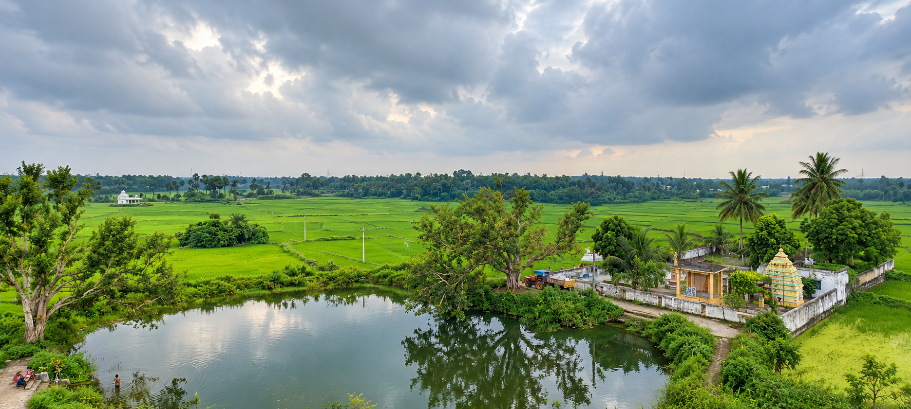
వానాకాలంలో గొర్లెపాడు చుట్టూ పచ్చని వరిపొలాలు విస్తరిస్తాయి. ఆకాశంలో కమ్ముకునే మేఘాలు, పొలాల మధ్య కనిపించే చెట్లు, చెరువు నీటిలో ప్రతిబింబించే ప్రకృతి—ఊరి దృశ్యాలకు ప్రశాంతమైన అందాన్ని ఇస్తాయి. పచ్చదనం మధ్య కనిపించే ఆలయం మన ఊరి ఆధ్యాత్మిక గుర్తింపును గుర్తుచేస్తుంది. ఈ చిత్రాల్లో వాన, నీరు, పంటపొలాలు, మన ఊరి నిశ్శబ్ద జీవనం ఒకే కథలా కలుస్తాయి.
During the monsoon, green paddy fields spread around Gorlepadu. Clouds gather overhead, trees rise among the fields, and the pond reflects the surrounding landscape. Together they give the village a quiet beauty. The temple among the greenery recalls the spiritual heart of our community. In these pictures, rain, water, fields and the calm rhythm of village life come together as one story.
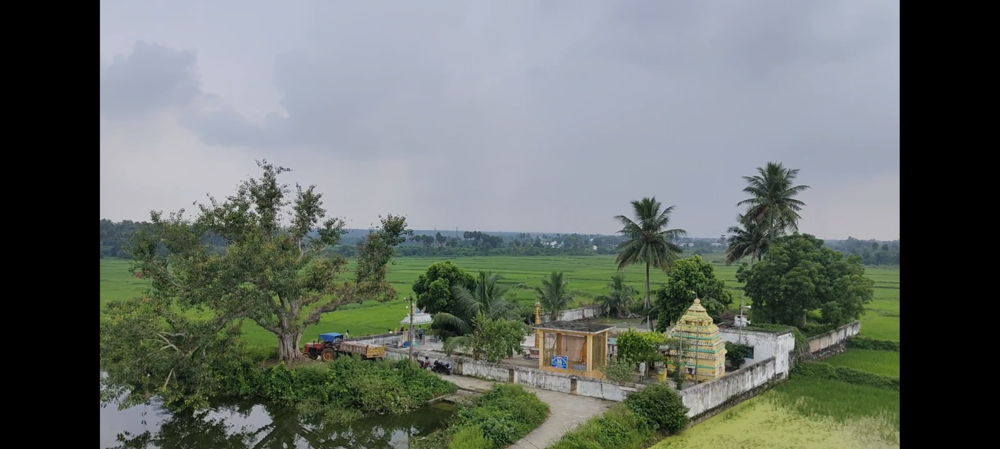
పచ్చని పొలాలు, చెట్లు, మేఘాల నడుమ ఆలయం ఊరి ప్రకృతి అందంతో మమేకమై కనిపిస్తుంది.
The temple sits within a landscape of green fields, trees and monsoon clouds.
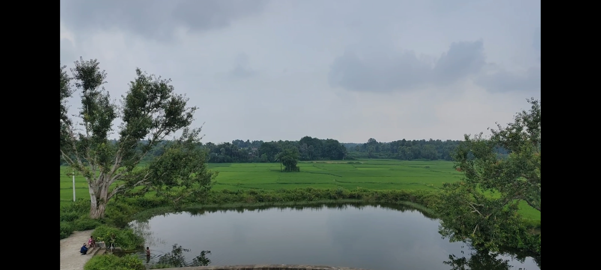
చెరువు నీటిలో ఆకాశం, చెట్ల ప్రతిబింబాలు కలిసి ప్రశాంతమైన దృశ్యాన్ని సృష్టిస్తున్నాయి.
The pond reflects the sky and trees, creating a peaceful village scene.
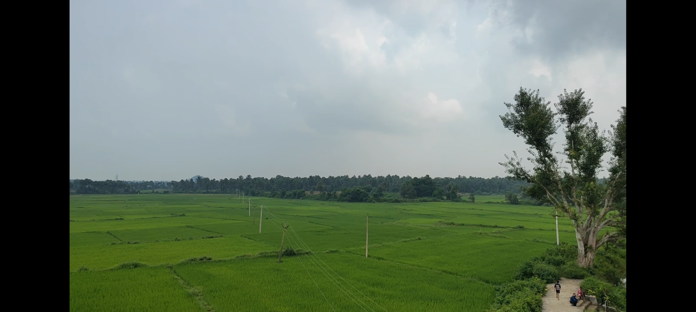
వానాకాలపు పచ్చదనం మన ఊరి వ్యవసాయ జీవనానికి, నేలతో ఉన్న అనుబంధానికి ప్రతిబింబం.
Monsoon greenery reflects the village’s farming life and its bond with the land.
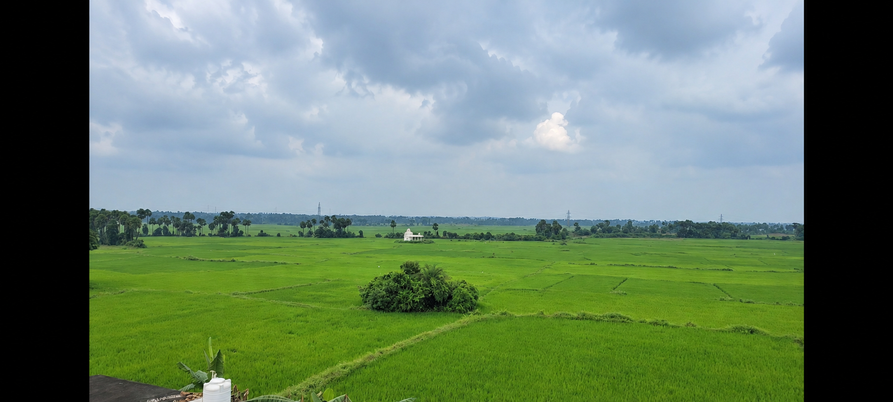
దూరం వరకు విస్తరించిన వరిపొలాలు గొర్లెపాడు ప్రకృతి అందాన్ని, వ్యవసాయ వాతావరణాన్నీ చూపిస్తున్నాయి.
Paddy fields stretching into the distance show the beauty and farming landscape of Gorlepadu.
ప్రతిరోజూ కనిపించే ప్రదేశాలు, మనందరినీ కలిపే జీవన విధానం.

పొలాల ఫోటోలు, వ్యవసాయం మా ఊరి జీవనంలో ఉన్న స్థానం చూడండి.
Explore the fields and the role farming plays in village life.
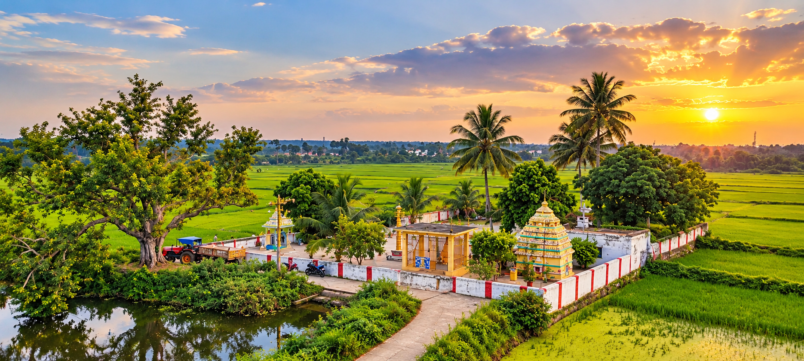
భక్తి, సంప్రదాయాలకు నిలయమైన మా ఊరి ఆలయం.
A place of devotion and tradition at the heart of our village.
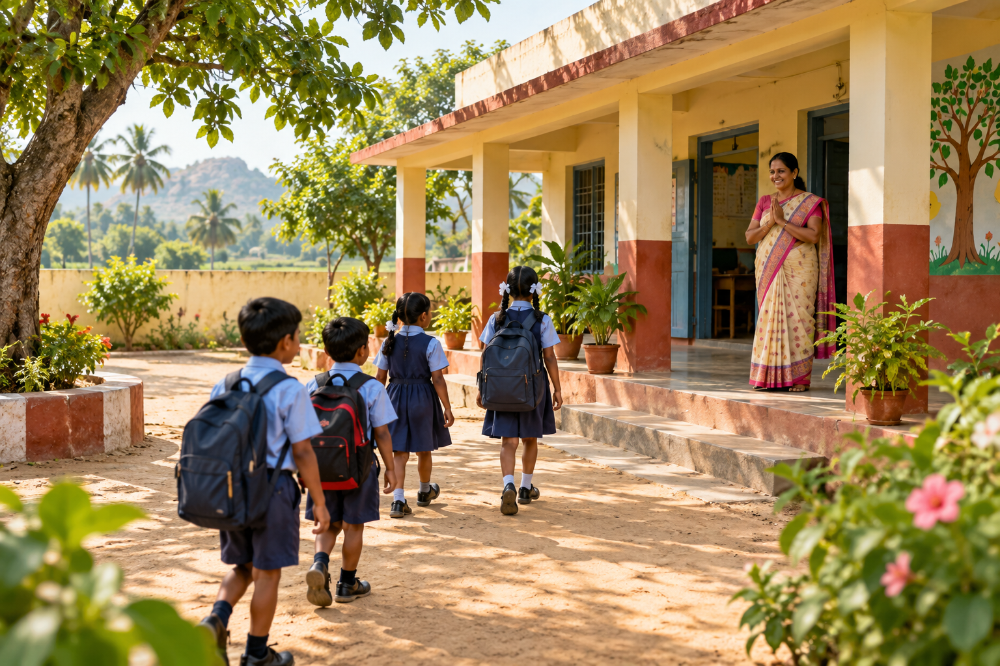
చదువు, రోజువారీ అవసరాలకు ఊరిలోని ముఖ్యమైన ప్రదేశాలు.
Places that support learning and everyday needs in the village.
గొర్లెపాడులోని శ్రీ శ్రీ శ్రీ కాశీ విశ్వనాథ ఆలయం భక్తి, సంప్రదాయం, గ్రామ ప్రజల ఆత్మీయత కలిసే పవిత్ర స్థలం. ఊరి ప్రజలతో పాటు వివిధ ప్రాంతాలు, నేపథ్యాల నుంచి భక్తులు ఈ ఆలయాన్ని దర్శిస్తారు.
Sri Sri Sri Kasi Viswanatha Aalayam is a sacred place where devotion, tradition and community come together in Gorlepadu. Along with village residents, devotees from many places and walks of life visit the temple.
ప్రతి సోమవారం రాత్రి ఆలయంలో భజనలు నిర్వహిస్తారు. బుధవారం రాత్రి భక్తులు భజగోవిందం పాడుతూ గ్రామమంతా తిరిగి, చివరికి మళ్లీ ఆలయానికి చేరుకుంటారు. ఈ వారపు సంప్రదాయం గ్రామ ప్రజలను భక్తితో కలుపుతుంది.
Bhajans are held at the temple every Monday night. On Wednesday nights, devotees sing Bhaja Govindam as they walk through the village together, returning to the temple at the end. This weekly tradition brings the community together in devotion.
ప్రతి సంవత్సరం మహా శివరాత్రిని, నవరాత్రులను ఆలయంలో ఘనంగా జరుపుకుంటారు. కార్తీక మాసంలో భజగోవిందం, భజనల్లో పాల్గొనడానికి ఇతర గ్రామాల నుంచి కూడా చాలామంది భక్తులు వస్తారు. వారికి భోజన సౌకర్యాలు కల్పించి ఆప్యాయంగా చూసుకోవడం గొర్లెపాడు ప్రజల మంచి మనసుకు నిదర్శనం.
Maha Shivaratri and Navaratri are celebrated grandly at the temple each year. During Kartika month, many devotees from neighbouring villages come to join Bhaja Govindam and devotional singing. The villagers offer meals and warm hospitality, showing the generosity of Gorlepadu’s people.
సుమారు 250 ఇళ్లతో ఉన్న గొర్లెపాడులో విభిన్న వృత్తులు, నైపుణ్యాలు కలిగిన కుటుంబాలు నివసిస్తున్నాయి.
Gorlepadu is home to around 250 households, with families contributing through many different skills and professions.
ఒక్కో పండుగ కథను చిత్రం ద్వారా తెలుసుకోండి.
Explore each festival through its picture and story.
గొర్లెపాడులో వినాయక చవితి యువకుల ఉత్సాహంతో మొదలై, ఊరంతా పాల్గొనే పండుగగా మారుతుంది. యువకులు ప్రతి ఇంటికి వెళ్లి చందాలు సేకరిస్తారు. ప్రతి ఇంటి సహకారం కలిసినప్పుడు గణేశుడి మండపం సిద్ధమవుతుంది—అది కేవలం అలంకరణ కాదు, గ్రామ ఐక్యతకు గుర్తు.
In Gorlepadu, Vinayaka Chavithi begins with the energy of the village youth and grows into a celebration for everyone. The young organisers visit each home to collect contributions. With every household’s support, the Ganesh pandal comes together as a sign of village unity.
తర్వాతి ఐదు రోజులు భక్తి, సందడి, సృజనాత్మకతతో నిండిపోతాయి. భజనలు, మంచి నాటకాలు, ఆటలు—ప్రతి కార్యక్రమంలో యువకులు, పిల్లలు, కుటుంబాలు ఉత్సాహంగా పాల్గొంటారు. ఈ వేడుకలో వయస్సుతో సంబంధం లేకుండా అందరికీ చోటుంటుంది; ఊరి సాయంత్రాలు కలిసిమెలిసి గడిపే జ్ఞాపకాలుగా మారతాయి.
The next five days are filled with devotion, activity and creativity. Bhajans, thoughtful plays and games bring young people, children and families into the celebration. There is a place for every generation, and the evenings become shared village memories.
నిమజ్జనం రోజున కూడా వేడుకను భక్తితో, ఆనందంతో నిర్వహిస్తారు. అన్నదానం వంటి సేవల ద్వారా అందరికీ భోజనం పంచుతారు. ప్రతి ఇంటి చందా నుంచి చివరి రోజు సేవ వరకు—ఈ పండుగ గొర్లెపాడు ప్రజల సహకారం, ఆత్మీయత, ఐక్యతను చాటుతుంది.
The immersion day is observed with devotion and joy. Community service, including annadanam, brings people together over a shared meal. From each home’s contribution to the final day of service, the festival reflects Gorlepadu’s generosity, warmth and unity.
ఐదు రోజుల భక్తి, కళ, ఆటపాటలు, అన్నదానంతో ఊరంతా కలిసి జరుపుకునే ఈ వేడుక గొర్లెపాడు ప్రజల ఐక్యతను చాటుతుంది.
These five days of devotion, culture, games and community meals bring the village together and reflect the unity of Gorlepadu’s people.
వినాయక చవితి వేడుకల్లో గణేశుడి లడ్డూ వేలం పాట కూడా నిర్వహిస్తారు. గ్రామస్థులు ఉత్సాహంగా పాల్గొనే ఈ వేలం పండుగ సందడిని మరింత పెంచుతుంది; ఊరి ప్రజలంతా కలిసి ఆనందించే మరో ప్రత్యేక ఘట్టంగా నిలుస్తుంది.
The festival also includes an auction of Lord Ganesha’s laddu. Villagers take part with enthusiasm, making it another special moment that adds to the celebration and brings the community together.
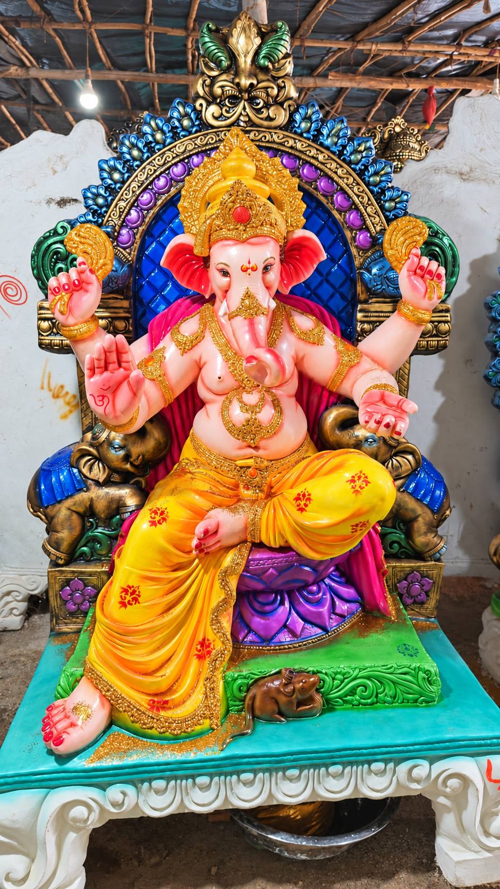
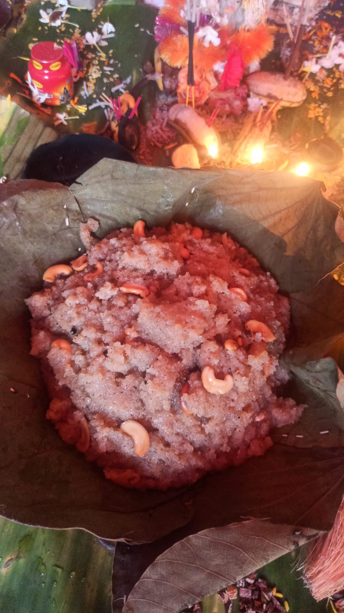
పొలాల పచ్చదనం నుంచి గ్రామపు ఇళ్ల వరకు—మన ఊరి అందాన్ని చూపించే క్షణాలు.
మేఘాలతో నిండిన ఆకాశం కింద విస్తరించిన పచ్చని పొలాలు గొర్లెపాడు ప్రకృతి అందాన్ని చూపిస్తున్నాయి. ఆకాశం మారే రంగులు, నేలపైని పచ్చదనం కలిసి వ్యవసాయ గ్రామానికి ప్రత్యేకమైన ప్రశాంతతను ఇస్తాయి.
Green fields stretch beneath a cloud-filled sky, showing Gorlepadu’s natural beauty. Changing skies and fields create the calm, open feeling of a farming village.
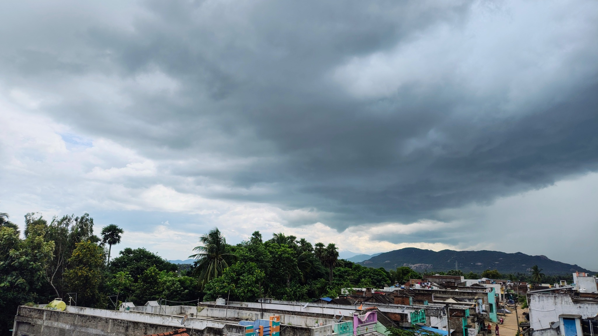
చెట్ల మధ్య కనిపించే ఇళ్లు, ఒకదానికొకటి దగ్గరగా ఉన్న వీధులు—ఇవి మన ఊరి రోజువారీ జీవనానికి నేపథ్యం. ప్రతి ఇంటి దగ్గరా ఒక పరిచయం, ఒక జ్ఞాపకం, ఒక అనుబంధం ఉంటుంది.
Homes among the trees and closely connected lanes form the setting of everyday village life. Each home holds a familiar face, a memory and a connection.
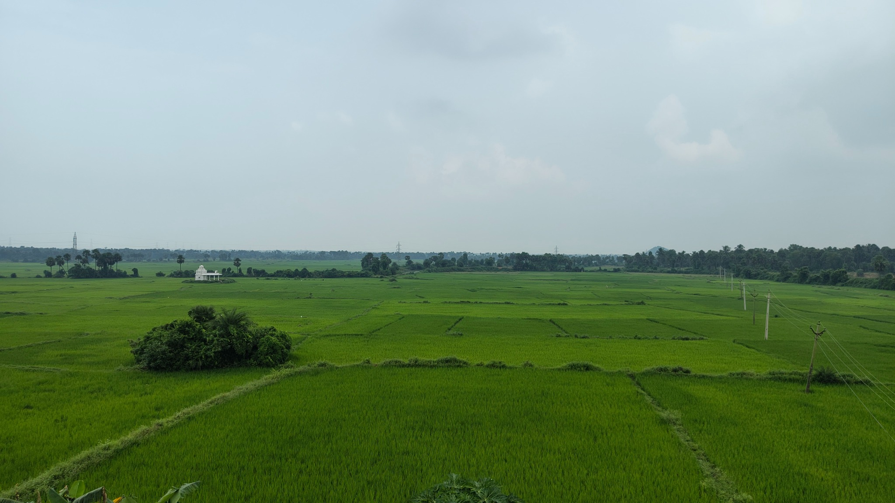
దూరం వరకు పరుచుకున్న పచ్చని పొలాలు గొర్లెపాడు వ్యవసాయ జీవనానికి ప్రతిబింబం. ఈ నేలతో రైతుల కష్టం, గ్రామ కుటుంబాల జీవనం, రేపటి ఆశలు ముడిపడి ఉన్నాయి.
The broad green fields reflect Gorlepadu’s agricultural life. The land is tied to farmers’ hard work, local livelihoods and hopes for the seasons ahead.
ఈ వీడియోలో ఊరి కదలికలు, పరిసరాలు, మన దైనందిన జీవితాన్ని చూడండి. మన ఊరి కథను మాటల్లోనే కాదు, దృశ్యాల్లోనూ పంచుకుందాం.
See the village surroundings and everyday life in this video. Let’s share Gorlepadu’s story through moving images as well as words.
గొర్లెపాడుతో పాటు చుట్టుపక్కల గ్రామాల నుంచి కూడా చాలామంది తూటిపురంలోని మా బాలకుమారి ఆలయం, బౌద్ధగిరి కొండలను సందర్శించడానికి వస్తుంటారు. ఆలయంలో భక్తితో సమయం గడిపి, కుటుంబంతో కలిసి భోజనం చేస్తారు; కొండపై నుంచి చుట్టుపక్కల గ్రామాలు, పచ్చని ప్రకృతి అందాలను చూస్తారు. ఈ చిన్న ప్రయాణాలు అందరికీ మధుర జ్ఞాపకాలుగా నిలుస్తాయి.
Both places are in Tootipuram, and many people from Gorlepadu and nearby villages visit them. Families spend time at Maa Balakumari Temple, share a meal, and enjoy the green landscape and village views from Boudhagiri Hills. These outings become happy memories for our community.
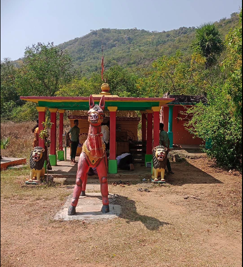
గొర్లెపాడికి దగ్గరలో ఉన్న మా బాలకుమారి ఆలయం భక్తితో పాటు కుటుంబ సభ్యులు, స్నేహితులు కలిసి గడిపే ఆత్మీయ ప్రదేశం. అక్కడికి వెళ్లినప్పుడు భోజనం సిద్ధం చేసుకుని అందరం కలిసి తింటూ, ఆలయ పరిసరాల్లో ఆనందంగా సమయం గడుపుతాం. ప్రకృతి మధ్య చేసే ఈ చిన్న విహారం మనసుకు హాయినిస్తుంది.
Close to Gorlepadu, Maa Balakumari Temple is a welcoming place where devotion and time with family and friends come together. When we visit, we prepare a meal, sit down and eat together, and enjoy the peaceful surroundings. This simple outing amid nature leaves us feeling refreshed.
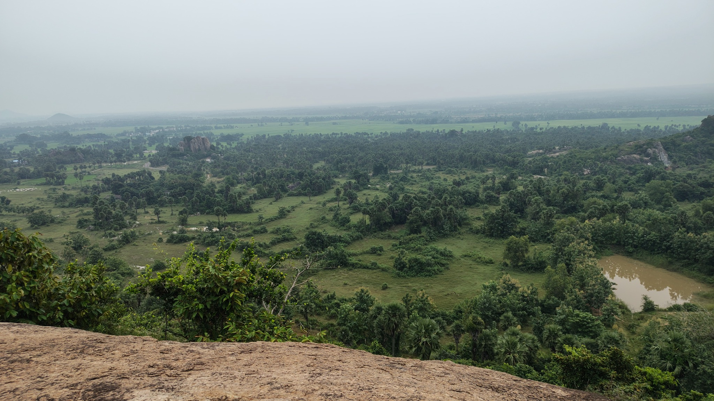
ఆలయానికి సమీపంలో ఉన్న బౌద్ధగిరి కొండలపైకి ఎక్కితే చుట్టుపక్కల ఎన్నో గ్రామాలు కనిపిస్తాయి. పై నుంచి విస్తరించే ఆ దృశ్యం చాలా అందంగా, ఆహ్లాదకరంగా ఉంటుంది. కలిసి కొండపైకి వెళ్లి ఆ విశాలమైన దృశ్యాన్ని చూడటం మాకు ఎంతో సంతోషాన్నిచ్చే అనుభవం.
From the top of nearby Boudhagiri Hills, you can see many villages across the surrounding landscape. The wide view is beautiful and uplifting. Climbing the hill together and taking in the scenery is a joyful experience for us.
మీ ప్రయాణాన్ని ప్రారంభించడానికి సమీప రవాణా కేంద్రాన్ని ఎంచుకోండి.
Start your visit from the nearest railway station.
దూరం, ప్రయాణ సమయం, బస్సు సర్వీసులు మారవచ్చు. బయలుదేరే ముందు తాజా మ్యాప్, స్థానిక సమాచారం చూసుకోండి.
Distances, travel times and bus services may vary. Check current maps and local travel information before setting out.